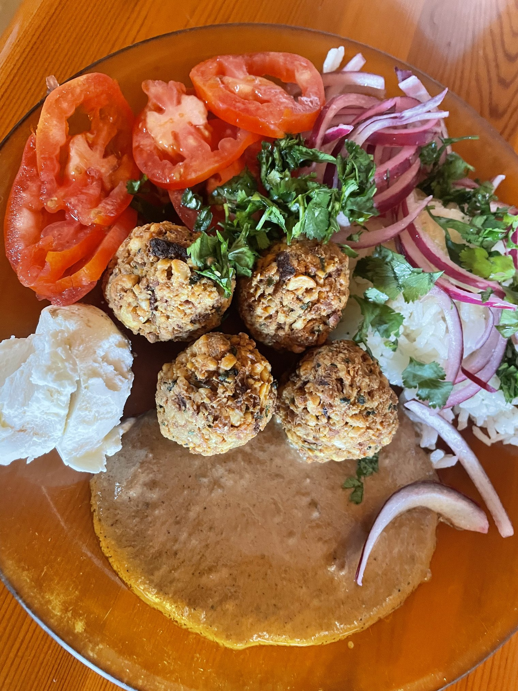

Falafel con arroz, tahini y labneh
Ingredientes
2×
- 250 g de garbanzos remojados (crudos)
- ½ cebolla
- 1 diente de ajo
- 1 manojo de perejil
- 1 cdta de comino
- sal
- 150 g de arroz
- 3 cdas de tahini
- zumo de limón
- 2 cdas de labneh
- 1 tomate
- ½ cebolla morada
- cilantro

Preparación
Paso 1
Triturar 250 g de garbanzos remojados (crudos) con ½ cebolla, 1 diente de ajo, 1 manojo de perejil, 1 cdta de comino y sal. Formar bolitas.
Paso 2
Hornear las bolitas 25min a 200ºC (o freírlas). Cocer 150 g de arroz.
Paso 3
Mezclar 3 cdas de tahini con zumo de limón y agua hasta tener una salsa.
Paso 4
Servir los falafel con el arroz, la salsa, 2 cdas de labneh, 1 tomate en rodajas, ½ cebolla morada en juliana y cilantro picado.